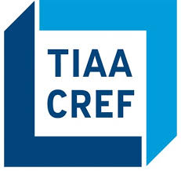
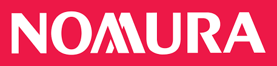
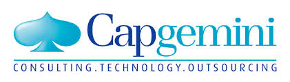
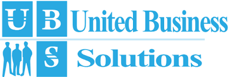

		<!-- Main -->
			<section id="main" class="wrapper">
				<div class="container">

					<header class="major">
						<h2>My Experience</h2>
						<p>I worked for major financial firms like Clear Markets Inc, Nomura International, TIAA-CREF, CapGemini and so on</p>
					</header>

					<!-- Image -->
						<section>
							<p><span class="image left"></span></p>
								<h4>Clear Markets Inc, Charlotte, North Carolina</h4>
							<p>Clear Markets is a leading innovator, developer, and operator of electronic
							marketplaces and trading technologies. The company has extensive experience building and
							operating electronic trading systems for complex
							fixed income and credit derivatives in the world’s major financial centers.</p>

							<p><span class="image right"></span></p>
								<h4>TIAA-CREF, Charlotte, North Carolina</h4>
							<p>TIAA-CREF, a nonprofit organization that provides investment and insurance services for those working in education,
							medicine, culture and research. TIAA-CREF, short for Teachers Insurance and Annuity Association -
							College Retirement Equities Fund, has a history that dates back to the late Andrew Carnegie, whose Carnegie Foundation
							for the Advancement of Teaching created the initial organization in order to service the pension needs of professors.</p>

							<p><span class="image left"></span></p>
								<h4>Nomura International, Charlotte, North Carolina</h4>
							<p>Nomura is dedicated to servicing a diverse range of clients globally, including institutional investors, financial institutions,
								 corporates, financial sponsors and government entities.
								 Wholesale Division comprises Global Markets, which offers research, sales and trading of global securities, and Investment
								Banking, which offers capital raising and advisory services.</p>

							<p><span class="image right"></span></p>
								<h4 style="text-align: right">CapGemini Financial Services, Charlotte, North Carolina</h4>
								<p>During the time developed the front end for Nomura International and TIAA-CREF.
							Developing a Single, consistent, scalable user interface solutions for delivering
							global web based content and applications to clients and employees. Multiples portal
							architectures and different solution exist for each region.
							These services support global client engagements for Equity, fixed Income,
							Research, Prime brokerage and IBD.</p>
							<p><span class="image left"></span></p>
								<h4>United Business Solutions, New Jersey</h4>
							<p>Project involves customizing the web sites as per the designed visual specifications.
							Project also involves in building and maintaining the website making it available on mobile
							devices with user friendly interface. </p>
							<p><span class="image right"></span></p>
								<h4 style="text-align: right">Northern Illinois University, DeKalb, Illinois</h4>
							<p>Delivering the complete website for the LGBT Resource Center, Northern Illinois University.
							This project included developing a online chat system. The main responsibilities were to develop
							the UI screens that allow the business to onboard and maintain their business.
							Project was involved in moving the entire website from WebCRMA server to the CASCADE server.</p>
						</section>

				</div>
			</section>
